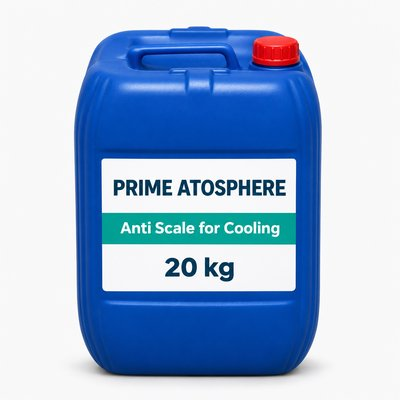
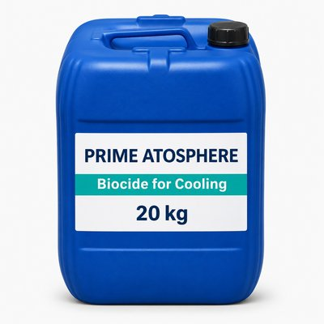
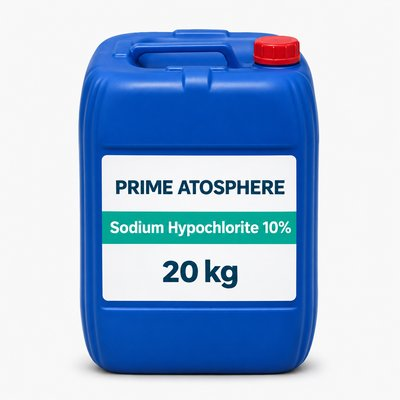

ควบคุมตะกรัน · IND-GI-S0038-A
Anti Scale for Cooling Tower
สารควบคุมตะกรันสำหรับระบบน้ำหอหล่อเย็น · บรรจุ 20 กก.
สารควบคุมตะกรัน สารควบคุมจุลินทรีย์ และสารออกซิไดซ์สำหรับระบบน้ำหล่อเย็นและกระบวนการอุตสาหกรรม บรรจุถัง 20 กก. ทุกรายการมี SDS ภาษาไทย–อังกฤษ

ควบคุมตะกรัน · IND-GI-S0038-A
สารควบคุมตะกรันสำหรับระบบน้ำหอหล่อเย็น · บรรจุ 20 กก.

ควบคุมจุลินทรีย์ · IND-GI-B0002-A
สารควบคุมจุลินทรีย์สำหรับระบบน้ำหล่อเย็น · บรรจุ 20 กก.

สารออกซิไดซ์ · IND-GI-S0013-A
สารละลายโซเดียมไฮโปคลอไรต์สำหรับงานอุตสาหกรรม · บรรจุ 20 กก.
ทีมเทคนิคของเราช่วยประเมินระบบและวางแผนการทดลองก่อนใช้งานจริง ข้อมูลผลิตภัณฑ์อ้างอิงจาก SPEC และ SDS ของ Prime Atosphere
ส่งรายละเอียดเครื่อง สารที่ใช้อยู่ และปัญหาที่อยากแก้ แล้วเราจะเสนอทางเลือกที่เหมาะสมShare your equipment, current fluid and the issue to solve, and we'll propose suitable options.
ขอใบเสนอราคา / ปรึกษาฟรีRequest a quote